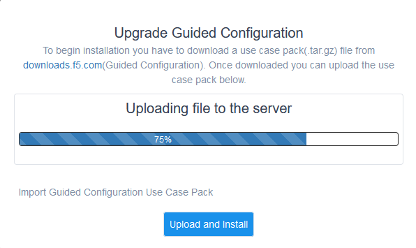
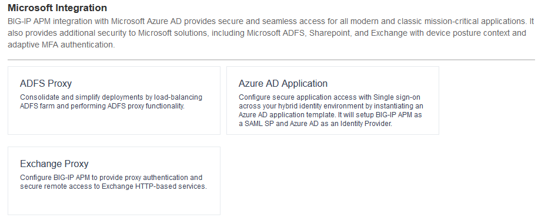
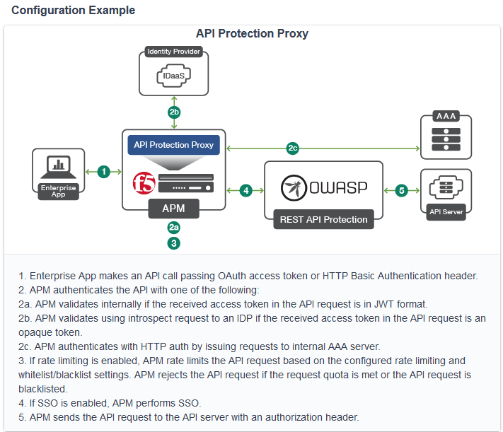
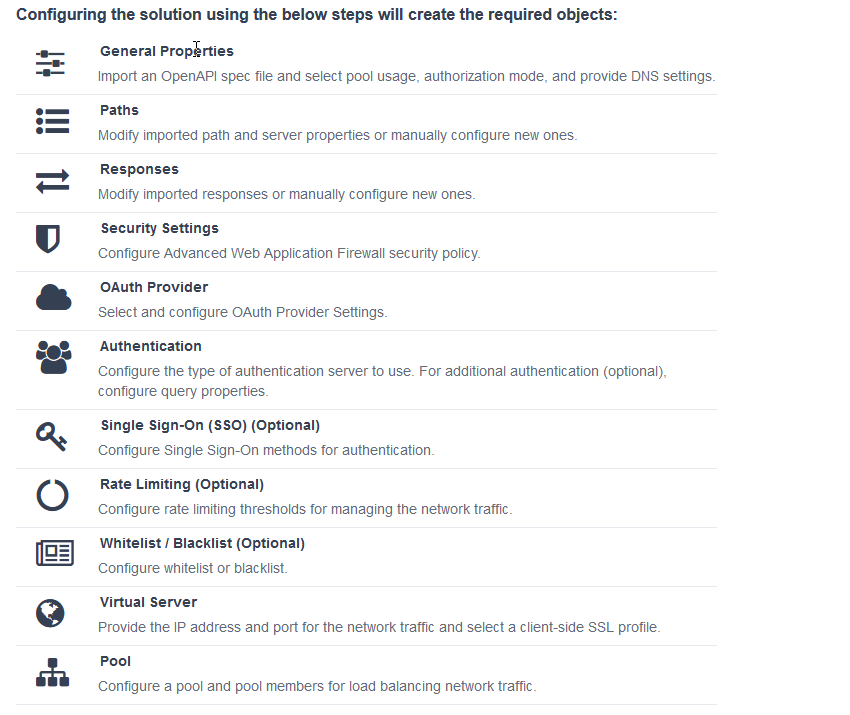
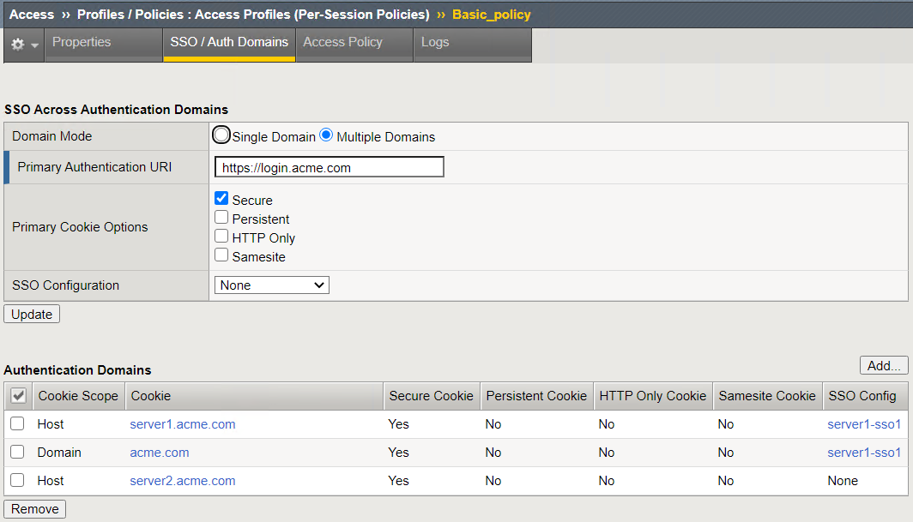
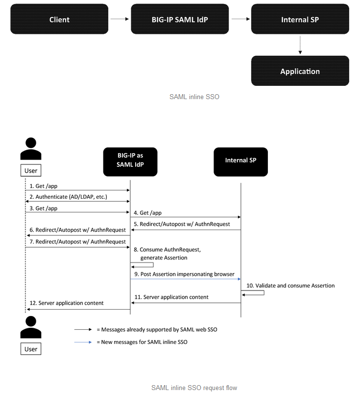

F5 Identity and Access Management Solutions > 100 Series: Access Foundational Concepts Source | Edit on
Appendix¶
Guided Configuration¶
Update Access Guided Configuration
Important
The lab has already been updated with the latest Access Guided Configuration updates. The following steps can be used on your own appliances.
https://downloads.f5.com/esd/product.jsp?sw=BIG-IP&pro=Guided_Configuration
Click on Access –> Guided Configuration from the left Menu
In the upper right corner you will find the version.

Click on Upgrade Guided configuration
Choose File
Navigate to the location you have saved the latest download and chose the tar.gz package
Click Upload and Install
Click Continue
Exploring other Access Guided Config Options
Click Access –> Guided Configuration
Click on the Microsoft Integration tile
There are three options available:
ADFS Proxy This is the Web Application Proxy (WAP) replacement use case where BIG-IP can replace the ADFS Windows Servers in the DMZ and serve as the secure WAP platform between your external users and the internal ADFS infrastructure. Azure AD Application This allows integration of Azure AD in to various web applications connecting through without need of application changes. Exchange Proxy This guided configuration replaces the need to run the iApps for Exchange. 
Click on the API Protection tile
Click on the API Protection Proxy configuration
The topology for API protection describes the configuration for this option. This configuration provides authentication pieces for your API.

Note
For more complete API protection combine APM with F5 Web Application Firewall for the most robust solution.
The objects created with this configuration:

Multi-Domain SSO¶
What is Domain Mode?
Access Policy Manager (APM) provides a method to enable users to use a single login or session across multiple virtual servers in separate domains. Users can access back-end applications through multiple domains or through multiple hosts within a single domain, eliminating additional credential requests when they go through those multiple domains. With multi-domain support, you have the option of applying different SSO methods across different domains.
Note
When thinking Domain do not confuse this with Active Directory domain. In this context domain refers to the DNS domain. Example, app1.f5demo.com and app2.f5dmeo.com are in the f5demo.com DNS domain.
Important
To enable multi-domain support, all virtual servers must be on a single BIG-IP system and share the same access profile. All virtual servers must include all of the profiles that the access profile requires (for example, VDI, rewrite, server SSL, connectivity, and so on).
APM provides the following benefits when using multi-domain support with SSO.
- Users can sign out from all domains at once.
- Users can move from one domain to another seamlessly. This eliminates the need re-run the access policy, and thus maintains the established session for the user.
- Administrators can configure different cookie settings (Secure, Host/Domain and Persistent) for different domains, and for different hosts within same domain
- Administrators can set up multiple SSO configurations to sign users in to multiple back-end applications for a single APM® session
What are the options?
Single Domain Choose this option for a single domain with a single sign on method Multiple Domains This option allows for one policy and multiple SSO methods to multiple Virtual Servers What is a Domain Cookie?
By default, BIG-IP APM requires authentication for each access profile. This can easily be changed by adding the domain cookie. For this section you will add the domain for your application. For example, if you have two applications app1.f5demo.com and app2.f5demo.com you would enter the domain f5demo.com for your domain cookie. Now your users can access each application and will only be prompted for authentication once.
Cookie Options
secure If the BIG-IP APM virtual server is configured with a Client SSL profile, select Secure (default setting) when configuring the BIG-IP APM SSO/Auth Domain cookie settings. Persistent Session cookie persistence functions only on BIG-IP LTM and APM deployments. For BIG-IP APM deployments with connectivity resources (such as Network Access, Portal Access, etc.), you cannot set BIG-IP APM cookies as Persistent. This is by design, as session cookie persistence can present a security risk. For some deployments of the BIG-IP APM system, as with Microsoft SharePoint, cookie persistence may be required. When you select cookie persistence, persistence is hard coded at 60 seconds. HTTP Only For BIG-IP APM deployments with connectivity resources (such as Network Access, Portal Access, etc.), do not set BIG-IP APM cookies with the HTTP Only flag. Samesite New in version 16.x APM now has the option to enable Samesite attribute for session cookies. This attribute enforces samesite usage and prevents the cookies from being included with cross-site requests. It can have one of these values:
- Strict: Only include the cookie with requests originating from the same site as the cookie
- Lax: Include the cookie with same-site requests and with top-level cross-site navigations that use a safe HTTP method. The cookie is not sent with cross-site sub-requests such as calls to load images, but is sent when a user navigates to the URL from an external site, such as by following a link.
- None: Do not enforce the same-site origin. If selected, requests must follow the HTTPS protocol, and the Secure cookie attribute must be set.
SSO Configuration
This drop down is where you will find all the SSO objects that you have configured on this BIG-IP appliance. If you want to enable an SSO method for an application first you must configuration the SSO object and then select in this section of the policy.
Note
Task 6 of Lab 1 will review SSO methods and configuration.
Multiple domains
If you return to the radio buttons and select Multiple Domains new options will appear. When this configuration is complete a user will be able to connect to any of the virtual servers associated and authentication will only be requested once. Subsequent connections in the domain group should not prompt for additional login. The caveat is that all Virtual Servers must share this same policy.
Primary Authentication URI Specifies the address of your primary authentication URI. An example would be https://login.acme.com. This is where the user session is created. As long as you provide the URI, your users are able to access multiple backend applications from multiple domains and hosts without requiring them to re-enter their credentials because the user session is stored on the primary domain. This is a required field if you selected Multiple Domains domain mode. Primary Cookie Options Secure (see above for cookie explanation) Cookie Example: Domain acme.com Cookie Options Seucre (see above for cookie explanation) SSO Configuration You can set the SSO method for the domain or you can set individual SSO methods per host 
Important
We will not be configuring this function in this lab. These are all examples. For more information on SSO/Auth Domains
Authentication¶
Authentication and authorization
Most organizations require users to verify their identity (authenticate). Additionally, most organizations control (authorize) the resources each user can access and the actions they can take when using their applications (services), based on their identity.
Identity providers and service providers
Federation is an agreement between organizations to trust user authentication and/or authorization from one organization (identity provider (IdP)) to access services from the other organizations in the group (service providers (SPs)). In this model, one organization can be both the IdP and an SP or simply an SP.
Federation provides many benefits to organizations and users, including single sign-on (SSO), which enables users to avoid logging in to each SP.
Standard web security protocols
To manage and map identities across geographies, SPs, and services, federation relies on common standards and protocols.
SAML 2.0
Security Assertion Markup Language (SAML) 2.0 is an open standard for exchanging authentication and authorization data between SPs. SAML 2.0 is an XML-based language that shares messages containing user information (assertions) while protecting their identity, thereby enabling a trusted relationship between SPs to perform services. SAML 2.0 relies on Simple Object Access Protocol (SOAP) to make web service calls.
Faster and easier
However, in recent years, representational state transfer (REST) has gained popularity as a light-weight alternative to SOAP that makes web service calls more quickly. Developers combine REST with JSON to transmit user data, instead of XML, because it is easier to implement and contains small, compact messages. This combination is the basis for OAuth 2.0 and OpenID Connect.
OAuth 2.0
OAuth 2.0 is an open standard for exchanging authorization data—but not authentication data—between SPs. It is a set of defined process flows for accessing resources on behalf of the user (delegated authorization).
In this model, the user (resource owner) has a resource hosted by one SP (on a resource server) that they want to make available to another SP (client), such as importing a list of contacts. The resource server must authorize the client’s access (using an authorization server) on behalf of the user. The resource owner does not sign in to the client, which requires authentication; however, the resource owner may be prompted to give consent to authorize the client’s access. For more information about BIG-IP APM and OAuth 2.0, refer to OAuth authorization.
OpenId Connect
OpenId Connect is an open standard for exchanging authentication data—but not authorization data—between SPs. OpenId Connect uses OAuth 2.0 and adds additional steps over its process flows to perform authentication. In short, when an authorization server is enabled for OpenId Connect, it provides an ID token in addition to an access token.
In this model, users use their account from one SP to sign in to another, such as using a Google or Facebook account to sign in to another website. The SP owning the account is the IdP with the authorization server and the other SP is the client.
Using a custom SP portal instead of the BIG-IP APM webtop for federation
Some enterprises do not want to use the built-in BIG-IP APM webtop as the portal to their SPs. Instead, they want to create their own, customized, external portal. For more information about the webtop, refer to Webtop.
As of BIG-IP APM 14.0, you can use a custom, external portal when you can use SAML inline SSO for federation. You must meet the following conditions:
- Federation is SP-initiated. That is, when a user visits an SP, the BIG-IP APM acts as the IdP.
- You have an existing per-session policy.
- Users visit the SP using the BIG-IP in BIG-IP LTM + BIG-IP APM mode.
Using SAML inline SSO
When you use SAML inline SSO, when BIG-IP APM receives an SP authentication request, it generates a SAML assertion on-the-fly to automatically sign in the user. The BIG-IP APM IdP is chained so that it accepts an assertion from another SAML IdP to create the session. The system constructs session data using the same method.
How it works
- You put an internal SP behind the virtual address for the IdP.
- You configure the internal SP server in a typical BIG-IP LTM pool on the virtual server. An SP that is load balanced by the BIG-IP can be either a SAML-enabled application or a third-party SAML SP.
- When the client transmits an authentication request to the BIG-IP APM IdP, the system generates assertions for the application.

- The user attempts to access a resource and BIG-IP APM starts access policy evaluation.
- The system authenticates the user.
- The user resends the original request.
- The BIG-IP system load balances the request to a pool member associated with the virtual server.
- When the user doesn’t have a valid session, the internal SP or SAML-enabled application generates an authentication request and redirects the user to the IdP.
- The system forwards the application response to the user, the browser evaluates it, and it results in an authentication request.
- The user submits the authentication request back to the BIG-IP virtual server.
- The BIG-IP APM IdP validates the request and, when successful, generates an assertion.
- The system modifies the client’s HTTP request and releases it to the internal SP.
- The internal SP receives and validates the assertion for the BIG-IP system.
- The SP either provides access to the application or provides an error to the user, depending on the result of validation.
Note
For more information about using SAML inline SSO, refer to K06743491: Overview of BIG-IP APM SAML inline SSO.
Using SAML inline SSO with multiple unique host names
Typically, you identify, load balance, and secure an SP by giving it a unique virtual address and host name, such as salesforce.f5.com. However, when you have multiple SPs with unique host names that you want to locate behind a single BIG-IP IdP, you don’t have to configure multiple BIG-IPs to act as IdP for each SP. That approach quickly becomes overly complex.
Instead, you can share a single access profile across all virtual addresses participating in SAML inline SSO. In this model, there is a main authentication virtual server that performs authentication and generates SAML assertions when requested. The SPs on other virtual servers use the same access profile. For more information, refer to the SP-initiated multi-domain inline SAML SSO section in K06743491: Overview of BIG-IP APM SAML inline SSO.
API protection¶
An API protection profile is the primary tool that Access Policy Manager administrators use to safeguard API servers. Protection profiles define groups of related RESTful APIs used by applications. The protection profile contains a list of paths that may appear in a request. The system classifies requests and sends them to specific API servers.
The simplest way to create an API protection profile and establish API protection is using an OpenAPI Spec file to import the details of the APIs. If you use an OpenAPI Spec file, Access Policy Manager automatically creates the following (depending on what’s included in the spec file):
- API Protection Profile
- Paths
- API servers
- Responses
- Per-request policy with a Request Classification agent and a subroutine containing an OAuth scope check agent
To enable API protection, the API Protection Profile must be associated with a virtual server. If using API Protection, the virtual server can have only one API Protection Profile associated with it. You cannot select other access profiles or per-request policies in that virtual server.
Secure Web Gateway¶
About APM Secure Web Gateway
BIG-IP Access Policy Manager (APM) implements a Secure Web Gateway (SWG) for outbound access by providing access control based on URL categorization to forward proxy. With APM, you can create a configuration to protect your network assets and end users from threats, and enforce a use and compliance policy for Internet access. Users that access the Internet from the enterprise go through APM, which can allow or block access to URL categories or indicate that the user should confirm the URL before access can be allowed. Benefits of using APM for web access BIG-IP Access Policy Manager (APM®) controls basic website access purely based on user-defined URL categories. This feature is a part of base APM functionality, without requiring an SWG subscription.
The benefits include:
- URL filtering capability for outbound web traffic.
- Monitoring and gating outbound traffic to maximize productivity and meet business needs.
- User identification or authentication (or both) tied to logging, and access control compliance and accountability.
- Visibility into SSL traffic.
- Reports on blocked requests and all requests. (Reports depend on event logging settings.)
- Ability to interactively request additional authentication for sensitive resources and provide time-limited access to them in subsessions.
- Ability to interactively request confirmation before allowing or blocking access to resources that might not, in all instances, provide benefit to the business. Confirmation and access take place in a subsession with its own lifetime and timeout values.
Secure Web Gateway subscription benefits
A BIG-IP Access Policy Manager (APM) with a Secure Web Gateway (SWG) subscription provides these benefits over those supplied by APM alone:
- A database with over 150 predefined URL categories and 60 million URLs.
- A service that regularly updates the URL database as new threats and URLs are identified.
- Identification of malicious content and the means to block it.
- Web application controls for application types, such as social networking and Internet communication in corporate environments.
- Support for Safe Search, a search engine feature that can prevent offensive content and images from showing up in search results.
- A dashboard with statistical information about traffic logged by the BIG-IP system for SWG. Graphs, such as Top URLs by Request Count and Top Categories by Blocked Request Count, summarize activities over time and provide access to underlying statistics.
SWG subscription benefits extend these APM benefits:
- URL filtering capability for outbound web traffic.
- Monitoring and gating outbound traffic to maximize productivity and meet business needs.
- User identification or authentication (or both) tied to logging, and access control compliance and accountability.
- Visibility into SSL traffic.
- Reports on blocked requests and all requests. (Reports depend on event logging settings.)
- Ability to interactively request additional authentication for sensitive resources and provide time-limited access to them in subsessions.
- Ability to interactively request confirmation before allowing or blocking access to resources that might not, in all instances, provide benefit to the business. Confirmation and access take place in a subsession with its own lifetime and timeout values.
What happens when the Secure Web Gateway subscription expires?
Secure Web Gateway (SWG) subscriptions expire periodically depending on the subscription length your company purchased. The system displays a warning message when the subscription is about to expire. If you fail to renew the subscription, your organization will lose access to SWG functionality, including category lookup within the Forcepoint URL database, request analytics, and response analytics. Depending on how the per-request policies implementing SWG are configured, requests to access the Internet through the forward proxy may fail.
If the SWG subscription expires and Reset on Failure is enabled in the Category lookup/Analytics agents, a TCP reset occurs whenever the category lookup fails. Clients receive no response from the server in this case and requests fail. You can configure a per-request policy to branch on failure and specify what you want to happen (such as Allow, Reject, or specify another path). For maximum protection, it is recommended that you renew the SWG subscription before it expires.
Note
For more information on Secure Access Gateway see F5 APM Implementation Guide
Access Control Lists¶
BIG-IP APM uses ACLs to restrict user access to specified internal hosts, ports and/or URIs. For an ACL to have an effect on traffic, it must be assigned to a user session. ACLs are applied to all access methods by default.
An ACL consists of a list of access control entries (ACEs). These entriescan work on L4, L7, or both.
In addition to source (ip:port), destination (ip:port), and Scheme + URI (for L7), each ACL and its entries has a unique acl-order field that determines its priority.
Important
Important If no webtop is assigned during access policy execution, the session is in Web Access Management/LTM-APM mode.
During access policy execution, BIG-APM assigns a list of ACLs to a user session. BIG-IP APM tests ACLs and ACEs in order, based on their priority in the respective list. To make sure of compliance with network use policies, the order must be correct.
If there are no ACLs assigned to a session by the access policy, the default behavior for the session traffic is Allow.
If a default deny stance is required, an ACL with a Deny All entry should be configured. This ACL should be assigned to the user session at the end of the ACL entry list (that is, its order field value should be highest number). BIG-IP APM rejects any connection not matched by a previous entry.
ACLs can be configured to create log entries when they are matched. These log entries appear in the /var/log/pktfilter log file. You can view them in the Configuration utility by going to System > Logs > Packet Filter.
When BIG-IP APM applies an ACL is applied to an access policy, the policy dynamically creates an internal layered virtual server that the system uses to apply the ACL. However, if the BIG-IP APM virtual server targets a layered virtual server, such as an SSO layered virtual server, traffic bypasses the dynamically-created internal layered virtual server and the ACL is not applied.
For more information, refer to K14219: An L4 ACL is not applied to the network access tunnel when a virtual server is used.
Dynamic ACLs
A dynamic ACL is an ACL created on and stored in an LDAP, RADIUS, or Active Directory server. A dynamic ACL action dynamically creates ACLs based on attributes from the AAA server. Because a dynamic ACL is associated with a user directory, you can use it to assign ACLs specifically per the user session. BIG-IP APM supports dynamic ACLs in an F5 ACL format, and in a subset of the Cisco ACL format.
When using dynamic ACLs, make sure that the dynamic ACL appears after authentication in an access policy since its actions are determined by attributes received from an authentication server. If it’s configured in a Cisco format, make sure the dynamic ACL contains the prefix ip:inacl#.
For more information, refer to Configuring Dynamic ACLs in BIG-IP Access Policy Manager: Implementations.
Note
For information about how to locate F5 product manuals, refer to K98133564: Tips for searching AskF5 and finding product documentation.
Webtops¶
A webtop is a BIG-IP APM customizable landing page. At the end of successful access policy execution and final client POST to complete the access policy, the client can be redirected to a BIG-IP APM webtop.
Webtop types
BIG-IP APM supports three types of webtop:
- Network Access Only Webtop — A network access webtop provides a webtop for an access policy branch to which you assign only a network access resource for starting a network access connection that provides full network access.
- Portal Access Webtop — A portal access webtop provides a webtop for an access policy branch to which you assign only portal access resources. When a user selects a resource, APM communicates with back-end servers and rewrites links in application web pages so that further requests from the client browser are directed back to the APM server.
- Full webtop — A full webtop provides an access policy ending for an access policy branch to which you can optionally assign portal access resources, app tunnels, remote desktops, and webtop links, in addition to network access tunnels. Then, the full webtop provides your clients with a web page on which they can choose resources, including a network access connection to start.
Note
If no webtop is assigned during access policy execution, the session is in Web Access Management/LTM-APM mode.
Features
- The full webtop can replace intranet or extranet portal pages, offering users a centralized place to start assigned applications.
- Network Access and Portal Access webtops automatically place users into a specific application assigned during access policy execution.
- BIG-IP APM provides a basic customization framework allowing administrators to alter images, color, and layout settings.
- The advanced customization framework allows web developers to completely replace all BIG-IP APM-delivered web content, including webtops, logon pages, and error pages.
Resources¶
- BIG-IP APM: Implementations
- BIG-IP APM: Visual Policy Editor
- BIG-IP APM: Customization
- BIG-IP APM: Advanced Customization Examples
- BIG-IP APM: Application Access
- BIG-IP APM: Authentication Essentials
- BIG-IP APM: Authentication Methods
- BIG-IP APM: Single Sign-on Concepts
- BIG-IP APM: Network Access
- BIG-IP APM: All things APM